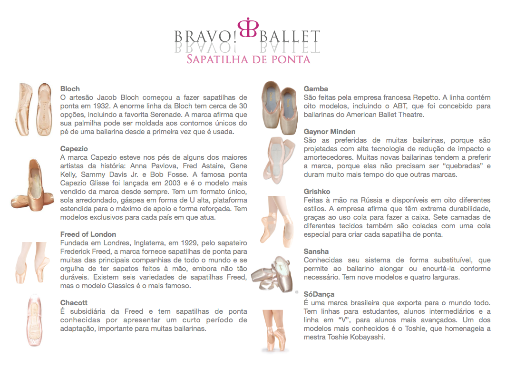
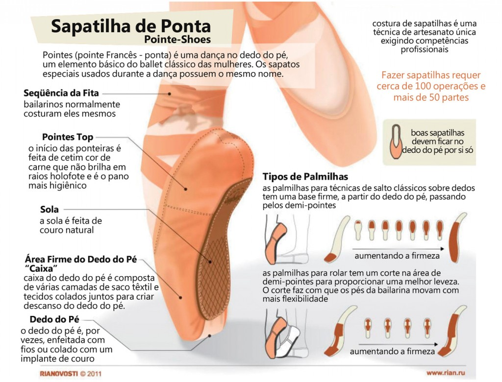

<body bgcolor="#f0f8ff">
</body>
<table border="0" align=center>
    <tr><th colspan=3 align=center>
      
<table border="0" align=center>
    </th></tr><table>
<table border="1" cellspacing="0" cellpadding=5 bordercolor="#000000" align=center>
    <tr>
         <td><center><a href="index.html"></a><footer><I><B><font size="4">Sobre a dança<I><B></footer></center></td>
         <td><center><a href="site3.html"></a><footer><I><B><font size="4">Que roupa devo usar?<I><B></footer></center></td>
         <td><center><a href="site4.html"></a><footer><I><B><font size="4">Sapatilhas de Ponta<I><B></footer></center></td>
         <td><center><a href="site5.html"></a><footer><I><B><font size="4">Melhores Bailarinos<I><B></footer></center></td>
         <td><center><a href="site6.html"></a><footer><I><B><font size="4">Melhores Escolas<I><B></footer></center></td>
<table><br>
<table border="0" align=center>
    <tr>
        <td><I><B><font size="6">Sapatilhas de ponta<B><I></td></tr>
</table>

<table border=0 cellspacing="10"width=90% align=center>
    <tr>
         <td><font size="4" face="Century"><B>Marcas:<B></td>
         <td><font size="3" face="Century">Bloch, Gaynor Minden, Sansha, Capezio, SoDança,Grishko e Freed of London são as mais famosas, mas ainda existem muitas outras</td>
        

    <tr>
         <td><font size="4" face="Century"><B>Cores:<B></td>
         <td><font size="3" face="Century"><justify>As sapatilhas de ponta mais usadas são as acetinadas nas cores rosa ou salmon bem clarinhas. Algumas bailarinas deixam opacas, ou até beges, dependendo do que irão dançar. Hoje em dia tem algumas marcas que produzem sapatilhas de ponta para peles morenas e negras, uma coisa revolucionária para o mercado do ballet!

Mas existem sapatilhas de várias cores, aliás, de todas as cores.</justify></td>
        
    </tr>
  <tr>
         <td><font size="4" face="Century"><B>Ponteiras e Dedeiras:<B></td>
         <td><font size="3" face="Century">Ajudam a evitar o atrito entre os dedos.</td>
        
    </tr>

</table>
<table border="0" align=center>
    <tr>
        <td><I><B><font size="4" face="Century">Exemplos:<B><I></td></tr>
</table>
<center><footer><a href="https://www.bravoballetbrasil.com.br/"><font size="2" face="Century">Bravo Ballet</a></footer><center>
<br><br>
<table border=0 width=100%>
            <td bgcolor="#00000"width="100%"><font color="#f0f8ff" face="Century"> <h3>  
               <center> Share:     Contato: ceciliamoreira2508@gmail.com ou (12)98259-1020</center> 
             </h3></font></td> </tr>
           <td bgcolor="#00000"width="100%"><font color="#f0f8ff"> <h3> 
           <center> O que achou das informações? Tem alguma sugestão?</center><br>
<center><textarea cols="70" rows="10" placeholder="Escreva aqui..."></textarea></center><br>
<center><input type="submit" id="btEnviar" value="Enviar" /></center> <br> <center><input type="reset" id="btLimpar" value="Limpar" /></center> 

</table>